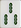
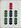
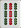
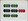
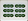

|
|
1点役
1. 一般高（イーバンガオ）：一盃口。
2. 喜相逢（シーシャンフォン）：二色同順。
3. 連六（リィェンリュウ）：数字が連続した同色の2順子。（123・456や234・567など）
4. 老少副（ラオサオフー）：123と789の同色の2順子。

5. 幺九刻（ヤオヂョウクォー）：老頭牌（1・9牌）または客風牌の刻子。
6. 明槓（ミンガン）：明槓。
7. 缺一門（チュエイーメン）：萬子、筒子、索子の内、一色が無いアガリ。
 フー フー
（索子が無いアガリ）
8. 無字（ウーヅー）：字牌の無いアガリ。
9. 辺張（ビィェンザン）：辺張待ちのアガリ。
フー
10. 坎張（カンザン）：嵌張待ちのアガリ。
フー
11. 単釣将（ダンディャオヂャン）：単騎待ちのアガリ。
フー
12. 自摸（ヅーモ）：ツモアガリ。
メンゼンでのツモアガリのときには25. 不求人になります。（ただし、メンゼン条件役のときを除きます）
13. 花牌（ホヮパイ）：手の中では使わず、明示してアガったときに1枚につき1点として扱う。ただし、8点しばりには含めない。日本国内の大会では使用しないこともあります。
, , , ,  , ,  , , , ,
|
|
|
|
2点役
14. 箭刻（ヂィェンク）：三元牌の刻子。
15. 圏風刻（チュェンフォンク）：場風牌の刻子。
（東場の場合）
16. 門風刻（メンフォンク）：自風牌の刻子。
（南家の場合）
17. 門前清（メンチィェンチン）：メンゼンでの出アガリ。（メンゼン条件役では加算しません）
18. 平和（ピンフー）：4つの順子＋数牌の雀頭によるアガリ。（雀頭が字牌では不可。待ちはリャンメン待ちでなくても構いません）
フー
19. 四帰一（スーグゥェイイー）：同一牌の4枚使い。
20. 双同刻（スワントンクォー）：二色同刻。
21. 双暗刻（スワンアンクォー）：二暗刻。
22. 暗槓（アンガン）：開示せずに4枚とも伏せます。
23. 断幺（ドゥァンヤオ）：中張牌（2～8の牌）だけでのアガリ。
フー
|
|
|
|
4点役
24. 全帯幺（チュェンダイヤオ）：チャンタ。（純全帯幺という役はありません。字牌がないときには、8. 無字や18. 平和を加算します）
フー
25. 不求人（ブチィョウレン）：メンゼンでのツモアガリ。
26. 双明槓（スワンミンガン）：二明槓。
27. 和絶張（フーヂュエザン）：場に3枚同じ牌が（捨牌や副露によって）すでに見えているときの、4枚目の牌でのアガリ。
|
|
|
|
6点役
28. 碰碰和（ポンポンフー）：対々和。
29. 混一色（フゥェンイースォー）：ホンイツ。
30. 三色三歩高（サンスォーサンブーガオ）：123・234・345や、234・345・456のように、数字が一つずつ繰り上がった三色の3順子。
31. 五門斉（ウーメンチー）：4面子と1雀頭を、それぞれ萬子・筒子・索子・四風牌・三元牌の1種ずつで作ったアガリ。
フー
32. 全求人（チュェンチィョウレン）：4副露しての（＝裸単騎での）出アガリ。
 フー（出アガリ）
33. 双暗槓（スワンアンガン）：二暗槓。（明槓一つと暗槓一つのときは5点として扱います）
34. 双箭刻（スワンヂィェンクォー）：三元牌の刻子2組。
|
|
|
|
8点役
35. 花竜（ホヮロン）：三色一通。
36. 推不倒（トゥェイブーダオ）：点対称の牌（, , , , , , , , , , , ,  ）だけを使ったアガリ。 ）だけを使ったアガリ。
フー
37. 三色三同順（サンスォーサントンスゥェン）：三色同順。
38. 三色三節高（サンスォーサンヂィエガオ）：三色三連刻。三色で数字の連続した刻子3つ。
39. 無番和（ウーファンフー）：他に役が一つも無いアガリ。
フー（出アガリ）
40. 妙手回春（ミャオソウフゥェイツゥェン）：海底ツモでのアガリ。
41. 海底撈月（ハイディラオユェー）：河底ロンでのアガリ。
42. 槓上開花（ガンサンカイファ）：嶺上開花。
43. 槍槓和（チャンガンフー）：搶槓。
|
|
|
|
12点役
44. 全不靠（チュェンブーカオ）：三色筋牌と各種字牌を1種ずつ集めたアガリ。
フー
45. 組合竜（ヅゥハーロン）：三色筋一通。（44. 全不靠と組み合わせる他に、9枚で3面子として扱うこともできます）
46. 大于五（ダーユィウー）：6～9の牌のみを使ったアガリ。
.png) フー フー
47. 小于五（シャオユィウー）：1～4の牌のみを使ったアガリ。
フー
48. 三風刻（サンフォンクォー）：風牌の刻子3組。
|
|
|
|
16点役
49. 清竜（チンロン）：一気通貫。
50. 三色双竜会（サンスォースワンロンフゥェイ）：二色の老少副と、もう一色の5の雀頭。
フー
51. 一色三歩高（イースォーサンブーガオ）：123・234・345、123・345・567のように、1歩ずつ、あるいは2歩ずつ繰り上がった同色の3順子。
（1歩上がり）
（2歩上がり）
52. 全帯五（チュェンダイウー）：全面子と雀頭に5を含むアガリ。
フー
53. 三同刻（サントンクォー）：三色同刻。
54. 三暗刻（サンアンクォー）：三暗刻。
|
|
|
|
24点役
55. 七対（チードゥェイ）：七対子。
56. 七星不靠（チーシンブーカオ）：44. 全不靠で字牌7種がすべて揃っているアガリ。
フー
57. 全双刻（チュェンスワンク）：偶数牌のみの28. 碰碰和（対々和）。
 フー
58. 清一色（チンイースォー）：チンイツ。
59. 一色三同順（イースォーサントンスゥェン）：同じ順子3つ。
60. 一色三節高（イースォーサンヂィエガオ）：三連刻。同じ色で数字の連続した刻子3つ。
61. 全大（チュェンダー）：7～9の牌のみを使ったアガリ。
フー
62. 全中（チュェンゾン）：4～6の牌のみを使ったアガリ。
フー
63. 全小（チュェンシャオ）：1～3の牌のみを使ったアガリ。
フー
|
|
|
|
32点役
64. 一色四歩高（イースォースーブーガオ）：123・234・345・456、123・345・567・789のように、1歩ずつ、あるいは2歩ずつ繰り上がった同色の4順子。
（1歩上がり）
（2歩上がり）
65. 三槓（サンガン）：三槓子。
66. 混幺九（フゥェンヤオヂョウ）：混老頭。
フー
|
|
|
|
48点役
67. 一色四同順（イースォースートンスゥェン）：同じ順子4つ。
68. 一色四節高（イースォースーヂィエガオ）：四連刻。同じ色で数字の連続した刻子4つ。
|
|
|
|
64点役
69. 清幺九（チンヤオヂョウ）：清老頭。老頭牌（1・9牌）だけでのアガリ。
フー
70. 小四喜（シャスーシー）：小四喜。
71. 小三元（シャオサンユェン）：小三元。
72. 字一色（ヅーイースォー）：字一色。すべて字牌のアガリ。
73. 四暗刻（スーアンクォー）：四暗刻。
74. 一色双竜会（イースォースワンロンフゥェイ）：清一色で、老少副2つと、5の雀頭のアガリ。
フー
|
|
|
|
88点役
75. 大四喜（ダースーシー）：大四喜：
76. 大三元（ダーサンユェン）：大三元。
77. 緑一色（リュイースォー）：緑色の牌（, , , , , ）だけを使ったアガリ。
フー
78. 九連宝灯（ヂィョウリィェンバオドン）：一色で、1112345678999＋1～9の牌でのアガリ。（純正9門張でなければ成立しません）
フー
79. 四槓（スーガン）：四槓子。
80. 連七対（リィェンチードゥェイ）：清一色で、数字が7連続の七対。
フー
81. 十三幺（スーサンヤオ）：国士無双。
フー
|
|